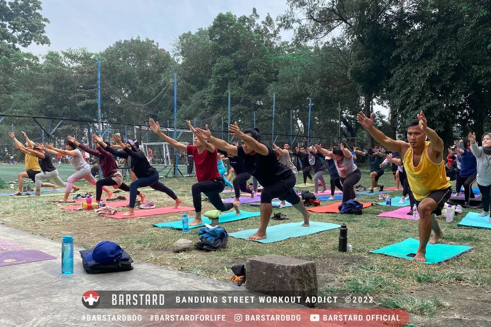
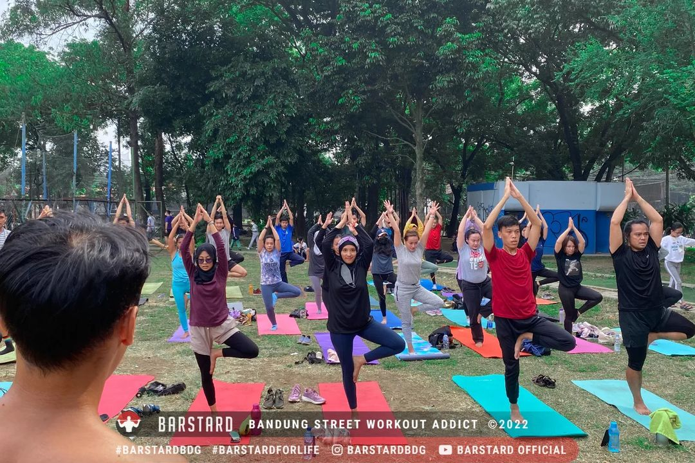
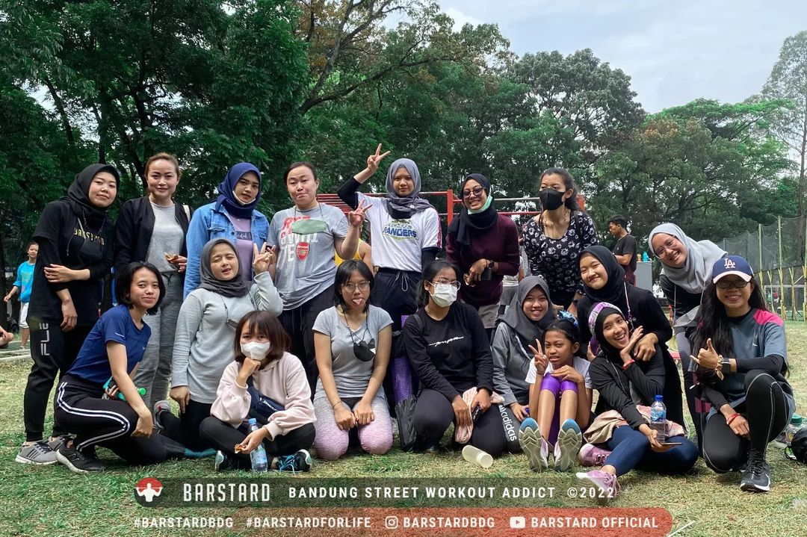
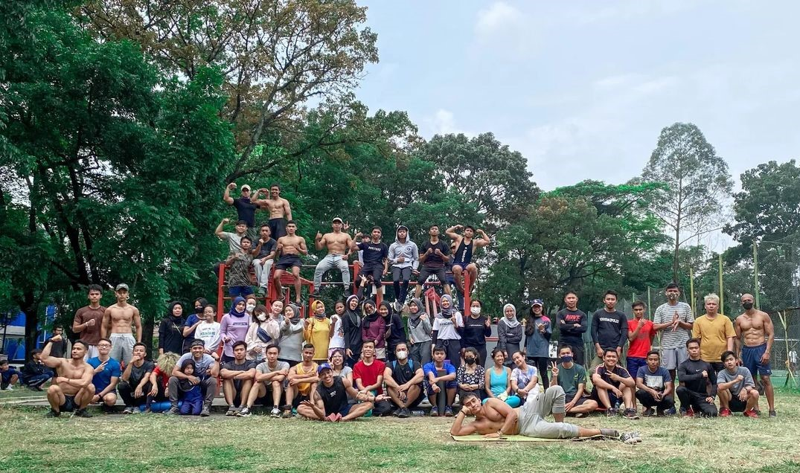

Kegiatan

Bakti Sosial
Kegiatan bakti sosial seringkali dilakukan barstard dalam 2 kurun waktu 2 minggu sekali.
ikut sini

Workout goes to
Workout di alam, kota dan tempat lainnya sungguh pengalaman yang luar biasa.
ikut sini

Lingkungan
Aktivitas lingkungan yang dilakukan Barstard berupa tanam pohon, bersih-bersih hingga aktivitas workout di alam bebas.
ikut sini

Keliling Bandung
Acara ini dilakukan di beberapa tempat di bandung, bahkan kami membuka acara keliling bandung gratis.
ikut sini